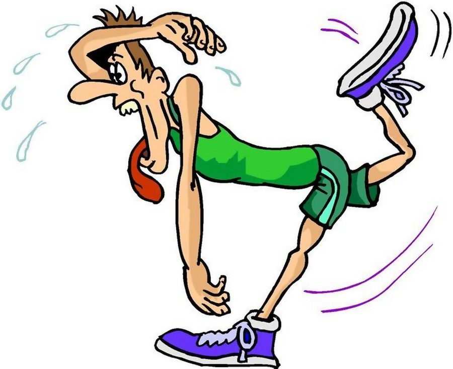

1. К внешним признакам утомления не относится…
2. Что относится к субъективным показателям состояния здоровья?
3. Что относится к объективным показателям состояния здоровья?
4. Физические упражнения ________ пульс. Запишите пропущенное слово (из предлагаемых вариантов ответа)
5. В состоянии покоя пульс (в среднем) составляет______ ударов в минуту?
6. Как называется прибор, которым измеряют ЖЕЛ (Жизненную ёмкость лёгких)?
7. Что не относится к антропометрическим данным?

8. Какой внешний признак характеризует значительную степень утомления?
9. Осанка – это...
10. Нарушения осанки могут привести к...
11. Правило для профилактики нарушения осанки
12. Для профилактики сколиоза постель должна быть...
13. В вертикальном положении, опущенная вперед голова

14. При сутулой осанке рекомендуют...
15. Осанка правильная, если вы подошли к стене и...